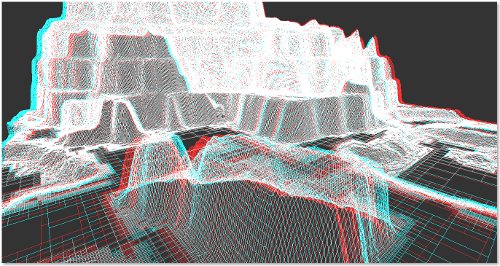
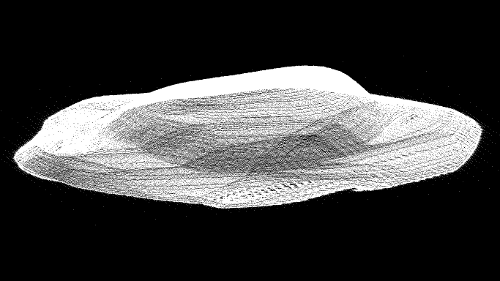
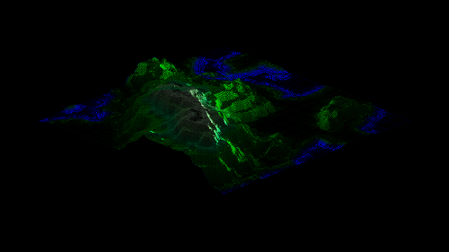

La cartographie de demain !
AutoMap est un logiciel de cartographie 3D intuitif, puissant et multiplateforme ! Grâce à AutoMap vous pourrez très aisément convertir vos relevés topologiques en une magnifique représentation tridimensionnelle.
AutoMap a été codé en Objective Caml et utilise les bibliothèques glMLite, LablGTK et OcamlSDL pour fonctionner.
AutoMap a été réalisé dans le cadre du projet du 1er semestre de deuxième année à l'EPITA.
Dimanche 4 Décembre 2011 à 17:52,
IN 3 D !!!!
Mercredi 30 Novembre 2011 à 18:53,
Vertex Buffer Objects et glMLite
LablGL a plein de qualités, celles de OpenGL 1.X. Or cette version de OpenGL ne supporte pas une optimisation absolument géniale qui s'appelle les Vertex Buffer Object (VBO)!
Les VBO consistent au fait de n'envoyer qu'une seule fois le tableau de point et de faces (ou autres comme les normales, textures etc ...) à la carte graphique. Ces données sont donc allouées dans un espace mémoire de la carte graphique et elle va pouvoir récupérer les informations toute seule et sans laps de temps.
En quelques heures nous nous sommes penchés sur glMLite que nous avions testé auparavant mais laissé de côté par peur de ne plus être compatible avec LablGTK. Nous avons ensuite converti tout le code et les instructions vers glMLite afin de pouvoir utiliser les nouveautés de OpenGL 3.X
Suite à cela, nous avons ajouté la gestion des VBO et là ce fut le comble !
Nous avons la possibilité dorénavant de monter jusqu'à 10 millions de points et 8 millions de facettes sans un seul lag et de plus, sur des laptop pas du tout récents (même pas bi-coeur) avec une carte graphique dédiée.
Un exemple de log lorsqu'on essaie de pousser la machine à fond (ça commence à être ingérable à ce stade là) :
max size : 111848109 real size : 14501454 time spent : 97.629596 sec. Changed display mode to textured solid Trying to load 3D model ... Loading 3D model ... vertices : 14501454 faces : 8700871 done 3D model successfuly loaded !
Jeudi 27 Octobre 2011 à 13:23,
Quad Tree : quand la magie opère...

100 000 points :D
{kind=link}
{kind=link}
{kind=link}